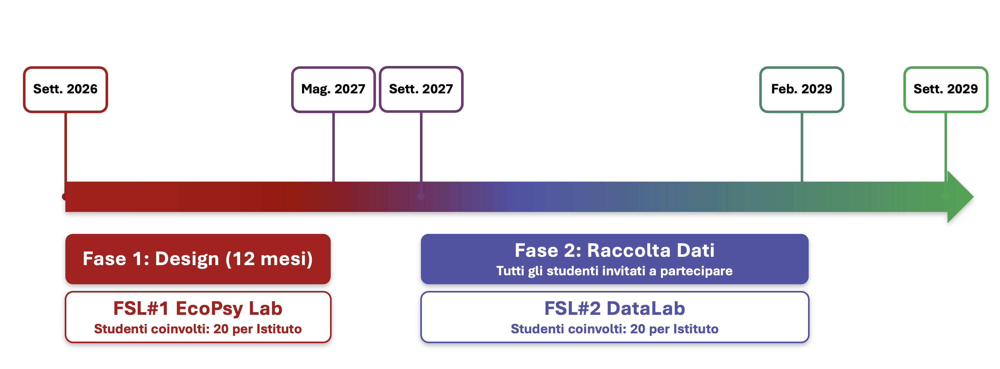

EcoPsy
Uno studio epidemiologico sul benessere mentale degli adolescenti nella Città Metropolitana di Roma e nei comuni limitrofi.
An epidemiological study on adolescent mental well-being in the Metropolitan Area of Rome and surrounding municipalities.
L'adolescenza è un periodo di profonda trasformazione, in cui il cervello e la personalità si formano in stretto dialogo con l'ambiente circostante. Negli ultimi anni — e in particolare dopo la pandemia da COVID-19 — i segnali di disagio tra i giovani si sono moltiplicati in modo preoccupante.
Adolescence is a period of profound transformation, in which the brain and personality take shape in close dialogue with the surrounding environment. In recent years — and particularly since the COVID-19 pandemic — signs of distress among young people have multiplied alarmingly.
Ansia, depressione, difficoltà nelle relazioni, dipendenze da sostanze e digitali: questi fenomeni non sono isolati. Emergono dall'intreccio di biologia individuale e ambiente — familiare, scolastico, sociale, urbano. Capire dove e come si sviluppano è il primo passo per intervenire in modo efficace.
Anxiety, depression, relational difficulties, substance and digital addictions: these phenomena are not isolated. They emerge from the interplay of individual biology and environment — familial, scholastic, social, urban. Understanding where and how they develop is the first step towards effective intervention.
La salute mentale delle persone non dipende solo dalla biologia. Un insieme di fattori ambientali — chiamati determinanti socio-ecologici — influenza profondamente il rischio di sviluppare un disturbo psicologico. Alcuni di questi fattori agiscono in modo diretto, nell'ambiente immediato della persona; altri in modo più indiretto, attraverso il contesto sociale e urbano in cui si vive.
Mental health is not just about biology. A set of environmental factors — called socio-ecological determinants — profoundly influences the risk of developing a psychological disorder. Some of these factors act directly, in the person's immediate environment; others more indirectly, through the social and urban context in which one lives.
Le dinamiche familiari, le esperienze avverse nell'infanzia (abusi, trascuratezza, perdite precoci) e lo stile educativo dei genitori sono tra i predittori più importanti del rischio psicopatologico in adolescenza e in età adulta.
Family dynamics, adverse childhood experiences (abuse, neglect, early loss) and parenting style are among the strongest predictors of psychopathological risk in adolescence and adulthood.
Le relazioni con i coetanei — positive o conflittuali — hanno un impatto diretto sul benessere emotivo. Il bullismo, incluso quello online, è associato a un elevato rischio di depressione, ansia e comportamenti autolesivi.
Relationships with peers — positive or conflictual — have a direct impact on emotional well-being. Bullying, including online, is associated with high risk of depression, anxiety and self-harming behaviours.
L'uso intensivo di smartphone e social media è associato a disturbi del sonno, isolamento e peggioramento dell'immagine corporea, specie nelle ragazze. Il confine tra uso problematico e vera e propria dipendenza è ancora oggetto di ricerca attiva.
Intensive use of smartphones and social media is associated with sleep disorders, isolation and worsened body image, especially in girls. The boundary between problematic use and full-blown addiction is still under active research.
Il quartiere in cui si cresce incide sulla salute mentale: l'accesso a spazi verdi riduce lo stress cronico, mentre l'esposizione a rumore, inquinamento e degrado urbano aumenta il rischio di ansia e depressione. Chi vive in città mostra tassi più alti di disturbi mentali rispetto alle aree rurali.
The neighbourhood in which one grows up affects mental health: access to green spaces reduces chronic stress, while exposure to noise, pollution and urban decay increases the risk of anxiety and depression. City dwellers show higher rates of mental disorders than those in rural areas.
Povertà e mancanza di risorse aumentano il rischio psicologico sia direttamente — attraverso lo stress materiale — sia indirettamente, creando divari nell'accesso ai servizi di salute mentale. Le famiglie più vulnerabili sono spesso quelle con meno strumenti per chiedere aiuto.
Poverty and lack of resources increase psychological risk both directly — through material stress — and indirectly, by creating gaps in access to mental health services. The most vulnerable families are often those with the fewest tools to seek help.
Qualità dell'aria, inquinamento acustico e luminoso, densità abitativa e coesione sociale del quartiere contribuiscono a definire il profilo di rischio ambientale. Anche i cambiamenti climatici — con eventi estremi sempre più frequenti — iniziano a emergere come determinanti della salute mentale delle giovani generazioni.
Air quality, noise and light pollution, housing density and neighbourhood social cohesion all contribute to the environmental risk profile. Climate change — with increasingly frequent extreme events — is also beginning to emerge as a determinant of mental health for younger generations.
Questi fattori non agiscono in isolamento: si intrecciano, si amplificano a vicenda e cambiano nel tempo e nello spazio. Costruire un quadro completo richiede strumenti di indagine nuovi — ed è esattamente ciò che EcoPsy si propone di fare.
These factors do not act in isolation: they intertwine, amplify each other and change over time and space. Building a complete picture requires new investigative tools — and that is precisely what EcoPsy sets out to do.
Vogliamo produrre una fotografia dettagliata e aggiornata del benessere psicologico degli adolescenti sul territorio: non solo quanti soffrono, ma dove vivono, in quali contesti e in che momenti della giornata e dell'anno il disagio è più intenso.
We want to produce a detailed, up-to-date picture of the psychological well-being of adolescents across the territory: not just how many suffer, but where they live, in which contexts, and at what moments of the day and year distress is most intense.
Avere molti dati non basta: bisogna trasformarli in strumenti utili. Useremo tecniche avanzate di intelligenza artificiale per costruire modelli capaci di prevedere — a partire da fattori ambientali e individuali — il possibile sviluppo di problemi psicologici.
Having a lot of data is not enough: it must be transformed into useful tools. We will use advanced artificial intelligence techniques to build models capable of predicting — based on environmental and individual factors — the possible development of psychological problems.
EcoPsy coinvolge scuole superiori distribuite nell'area metropolitana di Roma e nei comuni limitrofi, con l'obiettivo di rappresentare la diversità geografica, socioeconomica e tipologica del territorio.
EcoPsy involves secondary schools distributed across the Metropolitan Area of Rome and surrounding municipalities, aiming to represent the geographic, socioeconomic and typological diversity of the territory.
EcoPsy si sviluppa in tre anni: un primo anno dedicato alla co-progettazione con gli studenti, seguito da 18 mesi di raccolta dati su larga scala e da una fase finale di analisi e restituzione dei risultati.
EcoPsy unfolds over three years: a first year dedicated to co-design with students, followed by 18 months of large-scale data collection and a final phase of analysis and dissemination of results.

La prima fase di EcoPsy coprirà l'anno accademico 2026-2027 ed è dedicata alla progettazione partecipata dello studio. Il principio di fondo è semplice: prima di raccogliere dati sugli adolescenti, vogliamo progettare lo studio con loro.
The first phase of EcoPsy will cover the 2026-2027 academic year and is dedicated to participatory design of the study. The underlying principle is simple: before collecting data about adolescents, we want to design the study with them.
La co-progettazione parte dal presupposto che le persone direttamente coinvolte da un fenomeno abbiano una prospettiva insostituibile. Coinvolgere gli adolescenti nella definizione delle domande di ricerca migliora la qualità dei dati e aumenta la disponibilità a partecipare allo studio.
Co-design starts from the assumption that people directly affected by a phenomenon have an irreplaceable perspective on it. Involving adolescents in defining research questions improves data quality and increases willingness to participate in the study.
Gli strumenti di misurazione devono essere comprensibili e significativi per chi li compila. I focus group con gli studenti ci permettono di verificare che le domande siano appropriate sul piano linguistico e culturale, e che le variabili scelte siano davvero importanti per i giovani.
Measurement tools must be understandable and meaningful to those who fill them in. Focus groups with students allow us to verify that the questions are linguistically and culturally appropriate, and that the chosen variables truly matter to young people.
Partecipare alla progettazione di una ricerca è un'esperienza formativa concreta. Gli studenti acquisiscono strumenti per leggere criticamente i fenomeni di salute, sviluppano consapevolezza sul valore e sulla tutela dei propri dati personali e si avvicinano al mondo della ricerca scientifica.
Participating in research design is a concrete educational experience. Students gain tools to critically read health phenomena, develop awareness about the value and protection of their personal data, and get closer to the world of scientific research.
La Formazione Scuola-Lavoro (FSL) è il programma nazionale con cui le scuole superiori italiane offrono agli studenti esperienze formative in ambienti di lavoro reali. EcoPsy ha sviluppato un percorso FSL dedicato — EcoPsy Lab — che trasforma gli studenti da soggetti passivi a collaboratori attivi nella progettazione dello studio. Il percorso si articola in 4 incontri da 2 ore ciascuno presso le strutture dell'Università di Roma Tor Vergata e/o presso gli istituti coinvolti.
The School-Work Training (FSL) is the national programme through which Italian secondary schools offer students training experiences in real work environments. EcoPsy has developed a dedicated FSL pathway — EcoPsy Lab — that transforms students from passive subjects into active collaborators in the design of the study. The pathway consists of 4 meetings of 2 hours each at the University of Rome Tor Vergata and/or at the participating schools.
Principi di epidemiologia, fattori di rischio e protezione, strumenti di misurazione in psicologia clinica.
Principles of epidemiology, risk and protective factors, measurement tools in clinical psychology.
Discussione guidata sulle priorità di ricerca: quali domande e variabili contano davvero per i giovani?
Guided discussion on research priorities: which questions and variables truly matter to young people?
Osservazione e feedback sull'usabilità e sull'interfaccia dell'applicazione: gli studenti testano l'app e suggeriscono miglioramenti.
Observation and feedback on the app's usability and interface: students test the app and suggest improvements.
Gli studenti condividono osservazioni finali sul progetto. I risultati vengono integrati nel protocollo definitivo di raccolta dati.
Students share final observations on the project. Results are integrated into the definitive data collection protocol.
⚠️ In questa fase non vengono raccolti dati di ricerca. Gli studenti partecipano come consulenti e co-progettisti, non come soggetti di studio.
⚠️ No research data are collected in this phase. Students participate as consultants and co-designers, not as research subjects.
Dopo aver definito le variabili e testato gli strumenti insieme agli studenti, partiamo con la raccolta dati su larga scala: circa 18.000 studenti delle scuole superiori dell'area metropolitana di Roma, seguiti per 18 mesi tramite un'app dedicata e quattro modalità di misurazione complementari.
After defining the variables and testing the tools together with students, we begin large-scale data collection: approximately 18,000 students from secondary schools in the Metropolitan Area of Rome, followed for 18 months via a dedicated app and four complementary measurement methods.
All'inizio dello studio ogni partecipante completa un questionario via web (massimo 45 minuti) che raccoglie storia personale, profilo familiare, sintomi psicologici, qualità della vita e funzionamento scolastico. È il punto di partenza da cui si misurerà ogni cambiamento successivo.
At the start of the study each participant completes a web questionnaire (maximum 45 minutes) collecting personal history, family profile, psychological symptoms, quality of life and school functioning. This is the starting point from which all subsequent change will be measured.
Ogni mese l'app invia un breve questionario per monitorare eventuali cambiamenti nel benessere generale e nel funzionamento. Questi dati permettono di tracciare traiettorie nel lungo periodo e di individuare momenti critici nel corso dell'anno scolastico.
Each month the app sends a short questionnaire to monitor any changes in general well-being and functioning. This data makes it possible to trace long-term trajectories and identify critical moments during the school year.
L'Ecological Momentary Assessment è la metodologia innovativa che distingue EcoPsy. L'app invia 4 notifiche al giorno (solo fuori dall'orario scolastico) durante finestre temporali di 15 giorni a distanza di 3 mesi l'una dall'altra: gli studenti rispondono a brevi domande sullo stato d'animo, il contesto e le relazioni in quel preciso momento.
Ecological Momentary Assessment is the innovative methodology that sets EcoPsy apart. The app sends 4 notifications per day (only outside school hours) during 15-day windows spaced 3 months apart: students answer brief questions about mood, context and relationships at that precise moment.
Al termine dei 18 mesi l'app viene disinstallata e ogni partecipante riceve un resoconto anonimizzato dei risultati collettivi. Le scuole possono richiedere un incontro di restituzione con il team di ricerca.
At the end of the 18 months the app is uninstalled and each participant receives an anonymised summary of the collective results. Schools may request a feedback meeting with the research team.
Un ricercatore del team EcoPsy si reca in classe e illustra gli obiettivi dello studio, le modalità di partecipazione e le garanzie di privacy e anonimato.
An EcoPsy researcher visits the classroom and explains the study objectives, how participation works, and the privacy and anonymity guarantees.
Il ricercatore guida gli studenti nell'installazione e nella configurazione dell'app su smartphone personale, verificando che tutto funzioni correttamente.
The researcher guides students through installing and setting up the app on their personal smartphone, ensuring everything works correctly.
Gli studenti completano il questionario baseline direttamente dall'app, con il ricercatore disponibile per rispondere a eventuali domande. L'intera sessione si conclude entro 1 ora.
Students complete the baseline questionnaire directly in the app, with the researcher available to answer any questions. The entire session is completed within 1 hour.
La scuola è invitata soltanto a diffondere l'invito a partecipare alle famiglie degli studenti. La raccolta del consenso informato è gestita interamente dal team di ricerca. Nessun ulteriore impegno è richiesto al personale scolastico: docenti e dirigenti non sono coinvolti nelle procedure di raccolta dati.
The school is only asked to share the invitation to participate with students' families. Informed consent collection is handled entirely by the research team. No further commitment is required from school staff: teachers and administrators are not involved in data collection procedures.
Nella seconda fase del percorso FSL, gli studenti che hanno già partecipato all'FSL-1 entrano nel vivo dello studio. Affiancando il team di ricerca, possono seguire le fasi operative di raccolta dati, approfondire i temi della salute mentale e dell'epidemiologia tramite seminari dedicati e contribuire alla divulgazione dei risultati nelle proprie classi e istituti. L'obiettivo è restituire agli adolescenti un ruolo attivo non solo nella progettazione, ma anche nella conduzione e nella diffusione della ricerca scientifica.
In the second FSL phase, students who have already participated in FSL-1 enter the heart of the study. Working alongside the research team, they can follow the operational data collection phases, deepen their knowledge of mental health and epidemiology through dedicated seminars, and contribute to disseminating results in their own classes and schools. The aim is to give adolescents an active role not only in design, but also in conducting and communicating scientific research.
La partecipazione come soggetti di studio è volontaria e separata dal percorso FSL.
Participation as research subjects is voluntary and separate from the FSL pathway.
Siamo ancora in fase di reclutamento delle scuole nell'area metropolitana di Roma. Se sei un dirigente scolastico o un insegnante, contattaci per ricevere il materiale informativo.
We are still recruiting schools in the metropolitan area of Rome. If you are a head teacher or teacher, contact us to receive the informational materials.